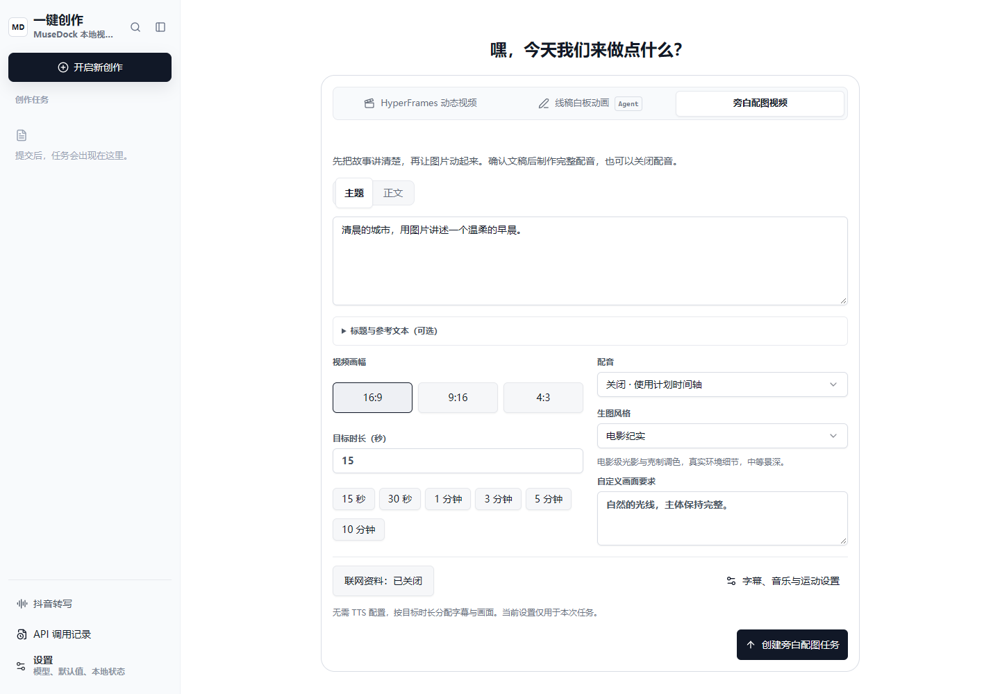
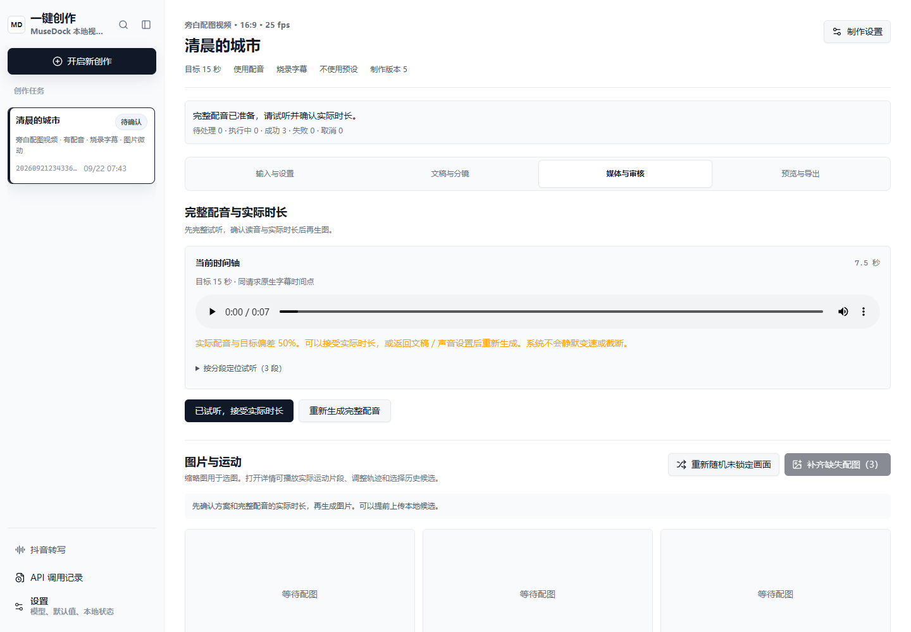

MuseDock · OpenDesign / tech-minimal-product
旁白配图视频
从文稿到图片、运动和成片，在同一条任务中完成。保留现有侧栏，按制作阶段逐步确认。
真实 React 界面
桌面与 390px
桌面与 390px

以上为已实现应用的浏览器截图，可在画面内部滚动。图片候选使用静态浏览；实际运动在下方可播放的视频中核对。
查看有声流程：完整配音试听与实际时长确认
这是实际界面的浏览器验收截图，音频数据为测试夹具。真实供应商音色仍待联调与人工试听。
